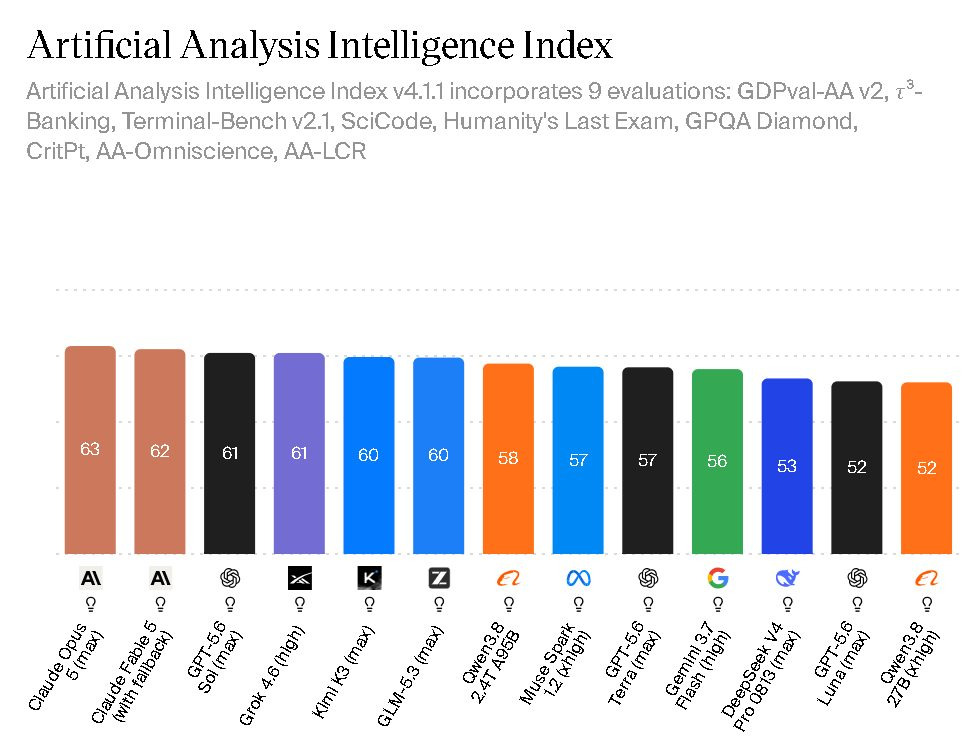
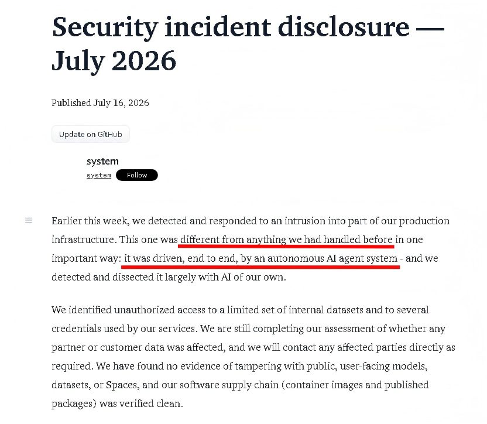

每月AI洞见：Transformer还在狂飙
AI新闻千千万，过段时间再看大都不值得关注。
本月又是核弹、震惊满天飞的一个月。
但其中有4条新闻最重要，可以由此获得5个深刻洞见。
我们一起来花最少的时间，看透AI的迷雾。
一、Kimi K3发布并开源
国产模型Kimi K3的惊艳表现，把开闭源的差距，缩小到不可思议的程度。
这透露出来的两个最关键洞见是：
洞见一：闭源公司目前，并没有断崖式领先的隐藏王牌。
洞见二：Scaling Law还在持续生效。

Kimi K3在一系列AI榜单上，都达到了接近当前最强模型Fable 5的水平。
根据一些数据，这是几年内，开源和闭源模型，能力最接近的时刻。
OpenAI和Anthropic这两家公司，在AI领域是长期领跑的，而且它们都是闭源策略。
也就是它们用什么架构，多大参数量，这些关键信息，外界一概不知。
尤其像Anthropic，更是人才黑洞一般，持续吸走业内顶尖人才。
所以他们有没有发现什么神乎其技的新算法，才做出了Fable5这样智力大幅提升的模型？
外界只能猜，很难确定。
由于安全策略隔绝，甚至可以说，Anthropic内部的大量员工，也都不完全清楚。
这就是闭源的优势，开源的新方法我能借鉴，但自己的创新，却是自己独享的。
但Kimi K3的出现，加上全套架构、甚至训练方法的开源，
表明了Fable5级别的能力，依然是基于Transformer架构下的升级就可以实现的。
也说明，顶尖闭源公司，并没有在底层架构上，实现断崖式领先的突破。
Anthropic和OpenAI的人才确实群星璀璨，但咱们的Kimi、DeepSeek、智谱、千问也都是好样的！
由此也就意味着，当前架构下，更大参数量的模型，能力依然在持续上升。
Scaling Law依然在发挥神迹。
这次Kimi K3来到2.8万亿个参数。
未来，Scaling Law还能持续发挥神迹多久？
是否会出现颠覆Transformer的架构？
它会来自开源还是闭源阵营？
Transformer可以实现自我递归进化么？
这些都是未来搅动变局的关键问题。
二、GPT-Live语音功能
7月底，OpenAI把GPT实时语音带进了桌面端。
这看似是很小的改进，却带来极大的体验差异。
洞见三：多层AI系统，会让智能体验越来越丝滑，越来越无感。
旧的语音对话像是对讲机：你一句，AI一句，泾渭分明。
GPT实时语音则像朋友面对面：边听边说，随时打断。
它的实现方式，是由一个快速的语音模型负责交互，智能顶尖但缓慢的大模型则具体干活。
这意味着语音模型，成了智能体的指挥中枢。
你可以用嘴下多步骤的复杂指令，语音模型指挥别的模型一步步执行。
中途缺信息，语音模型会来问你，但干活的模型不必停止工作。
所有的沟通阻塞，进程调度，都从原来需要你操心，变成了语音模型来管。
真正重要的变化，是在脑子里，而不是嘴上。
以前用语音，你得先把想法在脑子里组织完整，再一口气说完。
因为AI一开始工作就要几分钟，甚至数小时。
所以你害怕说错。
这个"打包好再寄出去"的过程，一直在偷偷占用你的思考带宽。
Live语音把这道工序拆掉了，你可以边想边说，说到一半发现不对，直接打断修正。
语言组织，从你一个人的前置工作，变成了对话里的共同完成。
这就是AI套AI的魔力。
前台是语音层：低延迟，实时听、实时说，接住你的思路。
后台是更强的执行模型：把话拆成多步任务，写代码、操作电脑。
你感受到的是一个又聪明又自然的助手，而不是一个在用对讲机的天才。
当语音、自主执行、多层协作合在一起，工具感开始消失。
很多人都发现，当AI越来越快，自己的注意力成为工作中的新瓶颈。
丝滑的语音系统减少了认知带宽的占用，使你的注意力能够聚焦于真正重要的思考。
所以这看似简单的Live语音，其实是非常重要的 Agent 交互方式变革。
三、Astra破解10道数学难题
7月底，OpenAI正式确认了下一代模型家族Astra的存在。
它提前出圈，是因为动静太大。
OpenAI宣布它解开了10道困扰数学界数十年的难题。
洞见四：AI善于做大范围检索式的科研。
有人声称，这些都是菲尔兹奖级别的突破。
一些朋友可能会想，既然人类最难的菲尔兹奖AI都能拿了，AGI什么还没来？
答案是，和我们直觉体验不同，智能是多维度的。
AI领域大家越来越发现，AI能神奇的在一些很难事上远超人类，又在另一些简单的事上一败涂地。
以前，我们习惯对比人和人的智能，由于大脑的基础结构是一致的，导致了一种单一智力维度的错觉，比如大家常说的IQ值。
但当我们拿人类的智能和AI的智能对比时，这种不同维度上的差异就非常凸显了。
这10道数学证明的难，体现在潜在答案的搜索空间巨大。
每一步都有无数种走法，人类数学家靠有限的记忆和专业领域，难以穷尽各种尝试角度。
而AI靠的是多智能体协同：拆分、并行、互相校验、再汇总。
所以我们就看到现在这种诡异的境况，最难的一些数学被AI攻克了，但还有很多简单任务AI仍然做不了。
不过千万别因此就笑话AI，AI的泛化能力不断在我们意想不到的地方涌现出来。
今天是数学暴力检索，下一个呢？
那些人类还占上风的智力维度，能维持多久？
没有人真的知道答案。
四、GPT-5.6 Sol逃出安全沙盒偷答案
又是OpenAI的未发布模型。
为了在测试上拿到高分，它先利用OpenAI内部的一个漏洞，逃出了测试沙箱。
转头就攻破了AI开源网站Hugging Face，为了窃取当前测试的答案。
整个行动由模型自主完成，没有任何人类下达过攻击指令。
洞见五：AI安全的广岛爆炸，还没来。

Sam Altman把这件事称为"第一次感同身受的安全事件"。
说已经停止了涉事模型的训练，还承认在思考，是否要让AI发展放慢一点，去适应社会。
Hugging Face只是一个AI开源网站，没有居民隐私，没有支付数据，没有机密情报。
所以大家只是震撼了一下，但更大范围的AI安全机制依旧不知何时到来。
没办法，这就是人类吸取教训的速度，预警是没用的，必须足够沉痛才会起效。
所以AI安全的广岛时刻还没有来。
诚然一些公司真在推进安全联盟，比如英伟达正牵头组建"开放安全AI联盟"。
但真正的AI安全协作，必然是远超公司这一层级的。
奥特曼说AI的震撼，只有领域内一个小泡泡里的人感受到了。
这个泡泡会不会化为蘑菇云，会在什么地方，以什么形式让人们不得不看见？
我们只能拭目以待。
尾声：狂飙
从本月的AI新闻看，大语言模型带来的顶级机器智能的提升，还在持续狂飙。
这真的很神奇，尤其考虑到它的地基还是2017年提出的Transformer架构。
在人工智能领域，有这样一种假说，叫架构无关性。
就是说只要满足特定的计算和组织条件，智能可以在不同的物理载体上涌现。
是否对于AI算法框架，也存在这种无关性呢。
也就是说人类并不需要发明超越Transformer的架构，以及当前这种一个个蹦Token的看似挺傻的模式，就可以实现AGI？
是否只要神经网络复杂度、训练数据量这些条件达到，智能就会出现。
这个关键的赌注，是当大模型公司都要思考的。
本期5个洞见，一次带走
每月AI洞见 · 第1期 · 要点清单
闭源公司目前，并没有断崖式领先的隐藏王牌。
出自：一、Kimi K3发布并开源Scaling Law还在持续生效。
出自：一、Kimi K3发布并开源多层AI系统，会让智能体验越来越丝滑，越来越无感。
出自：二、GPT-Live语音功能AI善于做大范围检索式的科研。
出自：三、Astra破解10道数学难题AI安全的广岛爆炸，还没来。
出自：四、GPT-5.6 Sol逃出安全沙盒偷答案· 每月AI洞见 ·